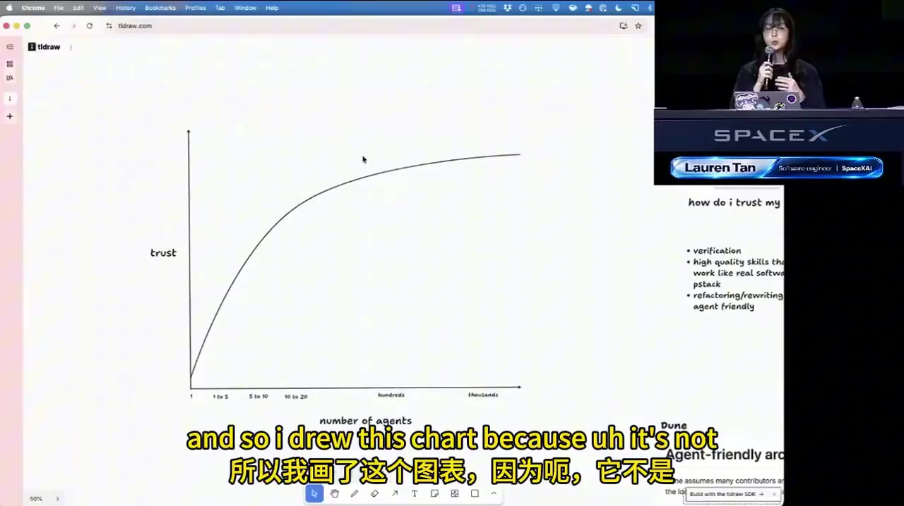
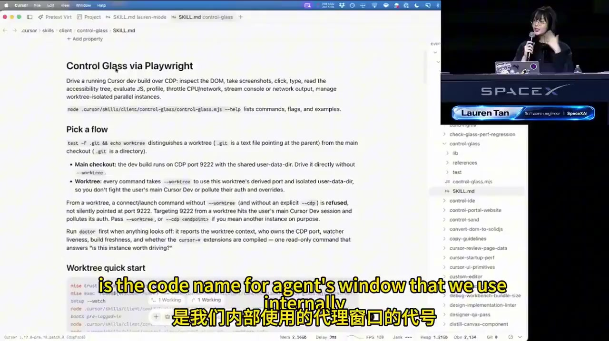
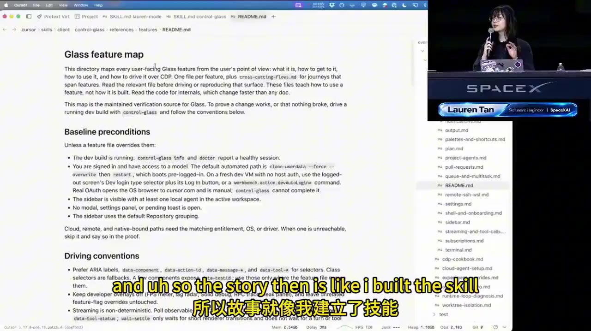
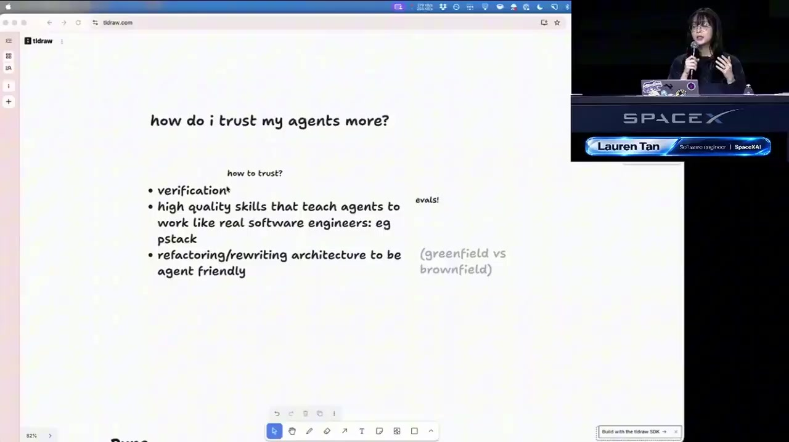
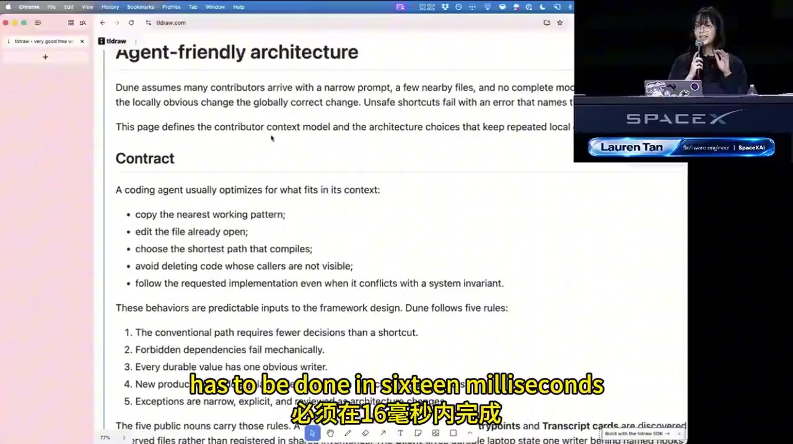
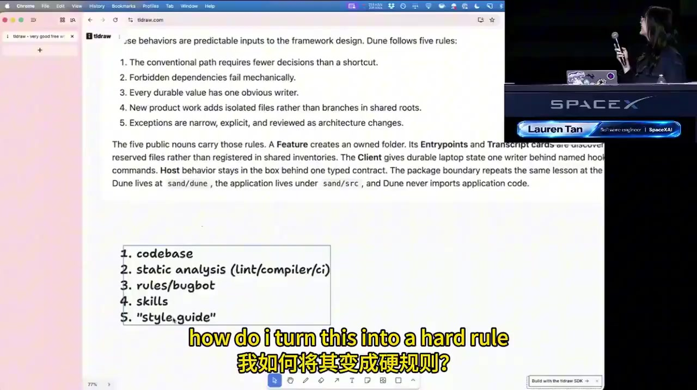

别急着雇佣 100 个 Agent。
先学会信任第一个。
把 AI Agent 从「会猜、会写、但不一定靠谱」培养成能够自我验证、遵守工程约束、并可安全并行的工程队友。
先拿走这 5 个结论
1. 验证能力决定信任上限
Agent 不只是要能写代码，还要能真实运行应用、复现问题、观察性能数据并证明结果成立。
2. 把经验编码成 Skills
把工程师的判断标准、操作路径、排障方法写成可复用指令，让 Agent 不再每次从零猜测。
3. Skills 也要被评测
Eval 就像 Agent 的单元测试。用任务、评分标准、独立子 Agent 和裁判模型检验 Skill 是否有效。
4. 架构要让正确路径最短
不要只靠提示词要求 Agent 写好代码。通过目录约定、依赖边界、静态分析和 CI，把坏路径变难甚至变成不可能。
5. 信任成熟后再规模化
先在本地观察与验证，再迁移到云端 Agent 和自动化。并行规模应该由验证能力支撑，而不是由 token 预算决定。
信任曲线：从手把手盯梢到放心并行
讲师手绘：信任提升后，协作方式发生变化

三个阶段
逐条看输出、不断补 Prompt、手动跑应用和复制报错。人是瓶颈，无法有效并行。
它能运行产品、采集 trace、检查 UI、复现 Bug。人从逐步监督转向抽查与设计规则。
云端 Agent 自动处理反馈、创建 PR，满足质量门槛后甚至自动合并，人类做高层审阅。
验证闭环：让 Agent 不只“说它好了”
什么叫真正的验证？
验证不是让模型自我评价“看起来没问题”，而是让它通过与真实用户环境相同或足够接近的方式运行并观察结果。
- 运行代码与真实应用。
- 采集 CPU trace、火焰图、Heap Snapshot。
- 打开 iOS Simulator 或浏览器 / Electron 应用。
- 执行用户路径，观察 UI 与交互。
- 读取控制台错误、性能指标和测试结果。
没有验证能力时的低效循环
问题：人类成为唯一验证器，Agent 的错误判断还会让人反复返工。
更好的闭环
案例：Control Glass / Playwright 验证 Skill
讲师加入 Cursor 后，需要处理 Agent Window 的性能问题。最初自己和 Agent 都不熟悉代码库，Agent 看到 trace 截图后会自信地猜错根因。于是他建立可程序化控制应用、运行测试和采集性能数据的 Skill。


Feature Map：给 Agent 一张“产品地图”
光会操作浏览器还不够。Agent 还要知道产品里有什么功能、入口在哪里、如何到达、对应哪些快捷键与 DOM 选择器。
- 功能名称与子功能结构。
- 用户视角的导航路径与前置条件。
- 键盘快捷键。
- 用于 CDP / Playwright 操作的 DOM 属性或选择器。
- 必要时包含截图、测试路径与相关代码位置。
这样用户只给一张截图或一句“侧边栏卡了”，Agent 也能更快定位功能并重现问题。Feature Map 不是静态说明书，应随着产品变化持续维护。
Skills：把工程经验变成 Agent 的工作手册
Skill 是什么？
讲师将 Skill 描述为一份承载指令、背景知识、流程和工程判断的 Markdown 文档。它把原本依赖资深工程师口头指导的经验，变成 Agent 可重复调用的上下文。
构建方法不是先设计一个庞大插件，而是观察 Agent 的真实失败模式：猜测根因、没读相关代码、不会操作 UI、没有使用子 Agent 等。每发现一类重复失败，就将解决办法沉淀成一个 Skill。
PStack：从一组 Skills 自然长出来
讲师分享的 PStack（Potato Stack）并非一开始就规划好的完整产品，而是由日常工作中逐渐积累的 Skills 与 Playbooks 组成。
- Create Verification Skill：创建验证能力与初始 Feature Map。
- Maintain Verification Skill：随着产品变化更新验证体系。
- Eval Playbook：对 Skill 做系统化评测。
- 其他实践：要求 Agent 查证代码、停止猜测、适当使用子 Agent。
Eval：Agent Skill 的单元测试
Eval 不一定需要专门框架。可以先用任务集合、评分 Rubric 和多 Agent 执行流程构成一套评测。
- 盲测：测试目录不要暴露“正在被评估”的明显信号，避免 Agent 因知道自己被测而改变行为。
- 多模型矩阵：在实际会使用的不同模型上运行，了解 Skill 的泛化表现。
- 独立裁判：可用不同模型作为 Judge，降低执行模型自评偏差。
- 迭代优化：根据分数持续改进 Skill；讲师提到用循环式工作流不断优化，直到达到目标分数。
维护 Skills 的关键：像结对编程一样观察 Agent
不要只看最终答案。要检查它实际调用了哪些工具、读了哪些代码、在哪一步误解任务、为何走错路径。把反复出现的错误变成新的 Skill、规则或自动化检查。

- Verification：验证闭环。
- High-quality skills：高质量 Skill。
- 可靠的基础设施 / 工程实践。
- 重构架构，让 Agent 更容易正确实现。
先本地练兵，再把 Agent 放进云端
为什么从本地开始？
本地环境更容易观察 Agent 的操作过程：它如何启动应用、调用 API、点击界面、读取 trace，以及在哪里失败。先让流程透明，才能知道该如何改进。
成熟后迁移云端
当验证 Skill 与环境准备成熟后，云端 Agent 可以在独立计算环境中运行应用、复现用户报告、执行任务并提交 PR。收益从单个工程师扩展到团队。
案例：Benny 自动处理 Bug 报告
- 接收团队 Slack 中的 Bug 报告。
- 在云端启动独立桌面与 Cursor 环境。
- 调用 Control / Verification Skills 操作产品。
- 尝试复现 Bug，收集实际行为。
- 判断问题是否仍存在，或是否已在 main 修复。
- 输出证据，减少工程师手动排查时间。
规模化的正确顺序
不要从“我能开 100 个 Agent”开始。若连一个 Agent 的输出都不信任，盲目并行只会放大错误、浪费 Token 和增加协调成本。
让正确路径成为最短路径
Greenfield 与 Brownfield：风险不一样
| 场景 | 特点 | 建议 |
|---|---|---|
| Brownfield 已有项目 | 可能已有成熟框架、约定、CI、权限与安全护栏。 | 先盘点现有约束；若基础良好，不必为了 Agent 盲目重写。 |
| Greenfield 新项目 / Vibe-coded 原型 | 很容易快速生成，却缺少架构边界与质量约束。 | 尽早设计强约束，否则 Agent 会不断选择局部最省事的捷径。 |
讲师认为：大型科技公司的基础设施和工程约束，反而能让 Agent 更可靠；而快速生成、无人审阅的全新代码库可能是最大风险与最大机会并存的地方。
“有机架构”会失控的原因
如果只让 Agent 完成眼前任务，它会选最方便的实现方式。每次局部看起来都能工作，但长期会累积重复逻辑、隐式耦合、边界混乱和难以理解的代码。
Dune：面向 Agent 的 Electron 应用架构思路

其核心不是某个神奇框架，而是一组明确约定：Agent 能快速找到应该改哪里，知道哪些行为允许发生，哪些行为会被系统拦截。
五条行为规则（画面中的 Dune rules）
- Conventional paths require fewer decisions：约定俗成的路径减少 Agent 的自由发挥空间。
- Forbidden dependencies fail mechanically：禁止的依赖关系由工具机械检测。
- Every durable value has one home：每个持久状态 / 值有唯一归属，避免多处维护。
- Every durable behavior has one home：每种持久行为有明确归属，避免逻辑散落。
- Exceptions are narrow, explicit, and reviewed：例外必须范围小、明确且经过审查。
目录与 Feature Co-location
一个 Feature 的相关代码尽量放在同一个目录中，例如 onboarding feature 的 UI、状态、逻辑和相关资源集中管理。
这样 Agent 不必全仓库搜索、猜测依赖位置；它能沿着统一约定完成大多数功能。
PR 要小而原子化
讲师鼓励 Agent 将工作拆成多个 PR。每个 PR 尽量表达一个独立变更，方便：
- 理解 Git 历史与决策上下文。
- 定位 Bug 来源。
- 单独 Revert / 回滚。
- 减少一个巨大 PR 混入多种变更的风险。
他提到 PR 可能从几十行到上千行，没设死的行数上限，重点是变更是否有清晰边界。
分层护栏：软规则要有，硬约束更重要
讲师分享的强约束示例
- 在特定 React / Dune 项目中禁用
useEffect，由 CI 强制。 - 禁用代码注释（讲师团队观察到 Agent 常生成过时、误导性的注释；这是该团队的特定取舍，并非普遍最佳实践）。
- Electron Main 与 Renderer 代码分区。
- 依赖图检查：禁止跨层非法 import。
- Lint / 静态分析检测已知坏模式。
- Compiler diagnostics 与 CI 硬失败。
为什么 Electron 要隔离？
Renderer 负责 UI 渲染，Main 进程处理其他工作。若计算密集或 IO 密集的逻辑意外进入 Renderer，就会抢占渲染时间。
60 FPS 下每帧约 16.7ms。超过预算就可能丢帧、卡顿，用户会感受到界面不流畅。
约束强度金字塔（根据讲师画面重建）

原则：越重要、越不可违反的规则，越应该落在架构、类型系统、静态分析或 CI 中；Rules、Skills、Style Guide 和代码审查用于补充，而不是独自承担全部质量责任。
五层约束清单（实操版）
| 层级 | 约束方式 | 适合管什么 | 强度 |
|---|---|---|---|
| 1 · 架构 | 目录、模块边界、依赖方向、唯一数据归属 | 系统级不变量 | 最强 |
| 2 · 静态分析 | Lint、编译器、依赖图规则 | 可机械识别的坏模式 | 强 |
| 3 · CI | 自动化测试、构建、性能与质量门禁 | 变更是否满足发布条件 | 强 |
| 4 · Rules / Review Bot | 代码审查规则、BugBot | 复杂语义、风险提示 | 中 / 软 |
| 5 · Skills / Style Guide | Markdown 指南、操作流程、示例 | 决策背景与推荐做法 | 辅助 |
这是对讲师内容的结构化归纳，不代表讲师给出的严格官方层级排序。
Token 花费不是目的，组织能力才是回报
前期投入，换长期复利
建立架构、重构代码库、补齐测试和验证 Skill 都会消耗 Token 与工程时间。讲师承认自己拥有相对充足的 Token 资源，因此不能把其工作方式原封不动地要求所有团队复制。
更合理的决策是做 ROI 评估：
- 前期投入：架构改造、测试、规则、Skill、Eval。
- 持续收益：更少人工验证、更快 Bug 定位、更低回归风险。
- 组织收益：PM、设计师和非专家也能在护栏内交付功能。
Token 预算如何想？
不要把 Agent 当成“每个小任务都多跑几遍”的无限资源。应优先投入到能减少未来重复劳动的系统能力。
是否值得投入取决于任务频率、失败代价、人工成本、Token 成本与系统复用范围。
GroqBot：让非技术团队也能使用 Agent
Cursor IDE / CLI 是面向开发者的工具，PM、设计师和 GTM 团队不一定觉得顺手。讲师认为 GroqBot 用类似 iMessage 的熟悉交互，让非技术人员也能创建有身份的 Agent、进行自然语言编排，并参与实际功能交付。
真正让这种协作可持续的，不只是友好的 UI，而是底层 Dune 架构、严格约束和验证机制，让不熟悉代码库的人也能沿着安全路径贡献。
视频时间索引
下面的时间点是根据语音转录与画面抽样整理的导航，不是官方章节标记。
提出信任问题、信任曲线、PR 数量案例与验证能力的重要性。
性能 trace、UI 自动化、产品功能地图、导航与 DOM 选择器。
从失败模式沉淀 Skill；Eval Rubric、多 Agent 盲测、Judge、持续优化。
本地观察、云端自动复现 Bug、Benny 案例、信任成熟后再并行。
代码库约束、Vibe-coded 项目风险、Dune 架构、PR 粒度。
禁用 useEffect 的案例、Main / Renderer 隔离、Feature Co-location。
静态分析、CI、Rules、Skills 的分层；把反复 Code Review 变成自动规则。
投入产出、GroqBot 的产品体验、PM 与设计师直接交付。
来做 5 道小测验 🎮
第 1 / 5 题